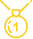
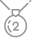
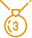
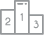
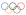
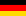
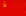
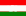

Los Juegos Olímpicos de 1992 (oficialmente denominados Juegos de la XXV Olimpiada) se celebraron en Barcelona, España, entre el 25 de julio y el 9 de agosto de 1992.
Participa en un total de 169 comités nacionales, siendo los primeros Juegos desde Múnich 1972 en los que no se produjo el boicot de ningún país. La vuelta a los Juegos Olímpicos de Sudáfrica, que no tomaba parte en los mismos desde 1960, tras el fin del apartheid, de Cuba que no era tan fácil desde la edición de Moscú 1980 y la de la Alemania reunificada fueron los regresos más reseñables. Fue también la última edición en que las ex repúblicas soviéticas participaron bajo la misma bandera, en este caso la bandera olímpica, y bajo el mismo nombre Equipo Unificado. Por otro lado, las repúblicas bálticas Estonia, Letonia y Lituania lo hicieron ya como países independientes por primera vez desde 1936.
Durante los Juegos se batieron un total de 32 récords mundiales y 73 olímpicos. El Equipo Unificado encabezó el medallero y el país anfitrión logró trece medallas de oro cuando en toda su historia solo había logrado cuatro. Tras la finalización de los Juegos el entonces presidente del COI, Juan Antonio Samaranch, consideró que los de Barcelona habían sido los mejores Juegos Olímpicos de la historia hasta ese momento.
| NOMBRE | XXV JUEGOS OLIMPICOS |
| LUGAR | Barcelona, España |
| FECHA | 25 de julio al 9 de agosto de 1992 |
| PAISES | 169 |
| DEPORTES | 28 |
| EVENTOS | 257 |
| ATLETAS | 9,356 (2,704 mujeres y 6,652 hombres) |
| ENCENDIDO DE FUEGO | Antonio Rebollo (Paralímpico de Tiro con Arco) |
| JURAMENTO DEPORTIVO | Luis Doreste (Vela) |
| JURAMENTO JUECES / ARBITROS | Eugeni Asencio (Polo Acuatico) |
| MASCOTAS | Coby (Perro estilizado) |
| DECLARATORIA INAUGURAL | Rey Juan Carlos I |
| ABANDERADO NACIONAL | Jesús Mena (clavados) |
| Lugar | País | Oro | Plata | Bronce | Total |
|  |  |  |  | ||
| 1 |  | 45 | 38 | 29 | 112 |
| 2 | 37 | 34 | 37 | 108 | |
| 3 |  | 33 | 21 | 28 | 82 |
| 4 |  | 16 | 22 | 16 | 54 |
| 5 | 14 | 6 | 11 | 31 | |
| 6 | 13 | 7 | 2 | 22 | |
| 7 | 12 | 5 | 12 | 29 | |
| 8 |  | 11 | 12 | 7 | 30 |
| 9 | 8 | 5 | 16 | 29 | |
| 10 | 7 | 9 | 11 | 27 |